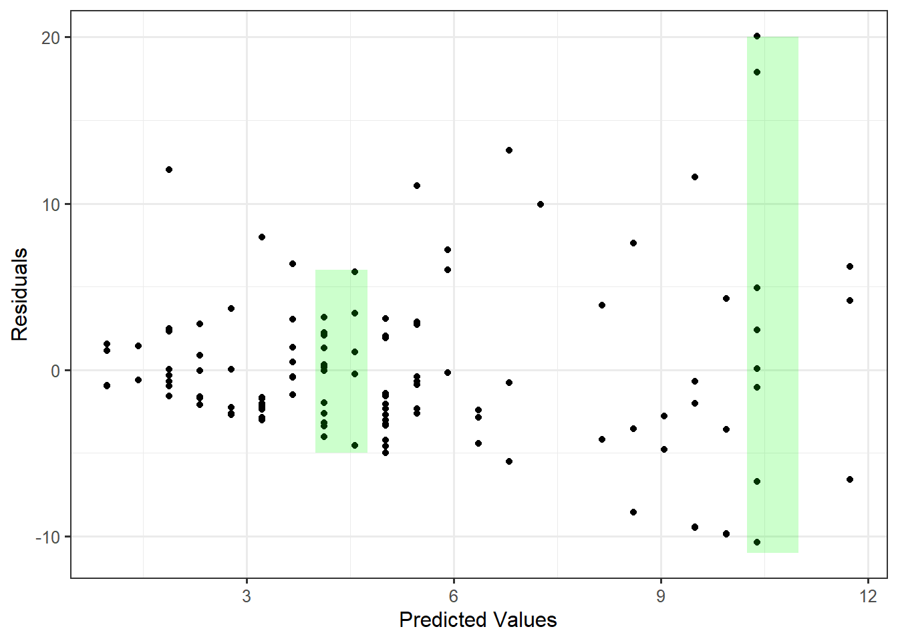
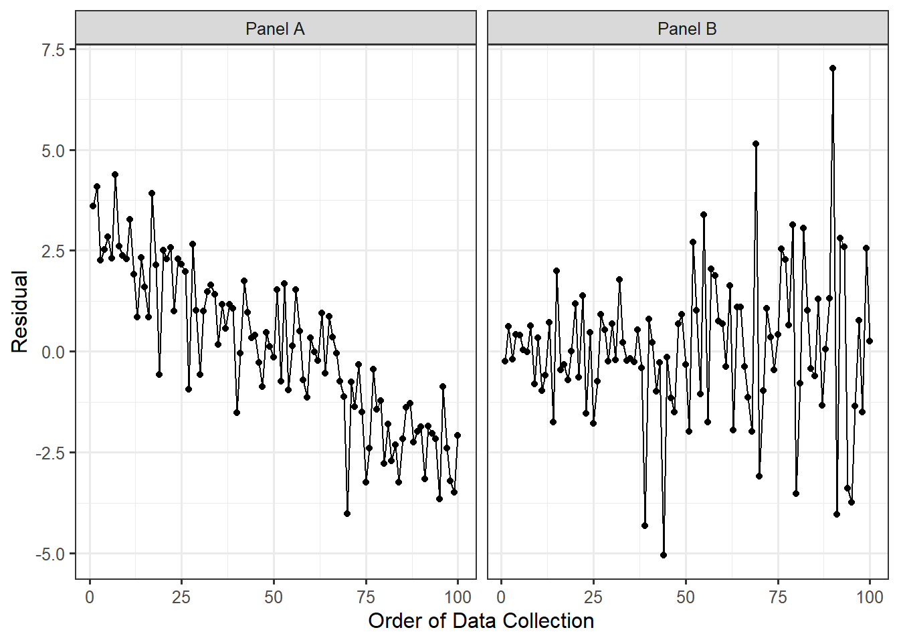
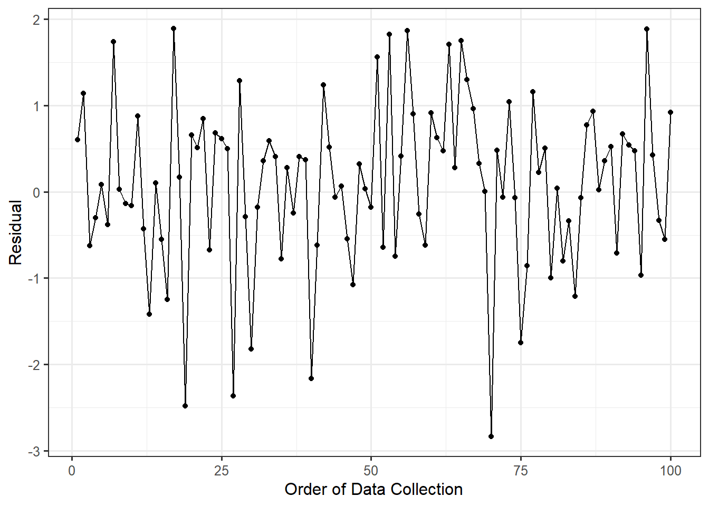
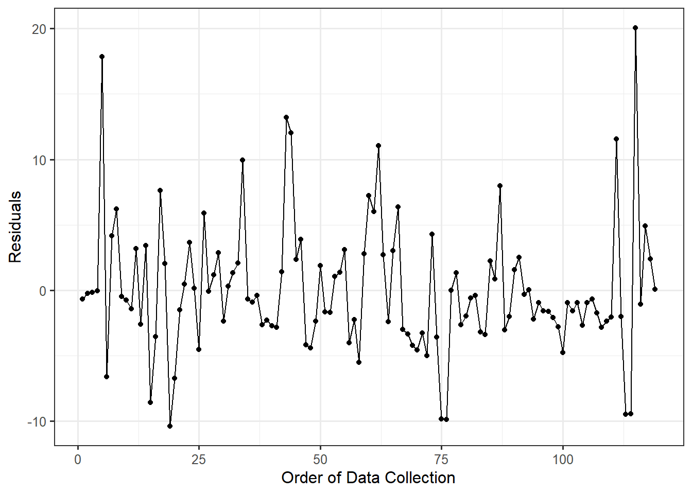
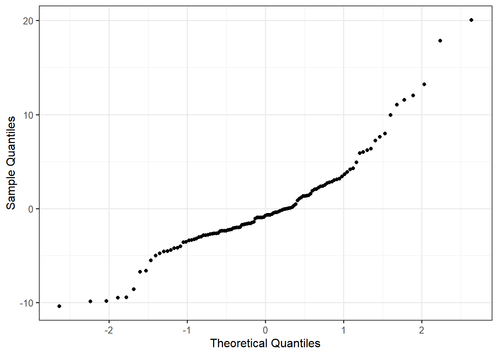
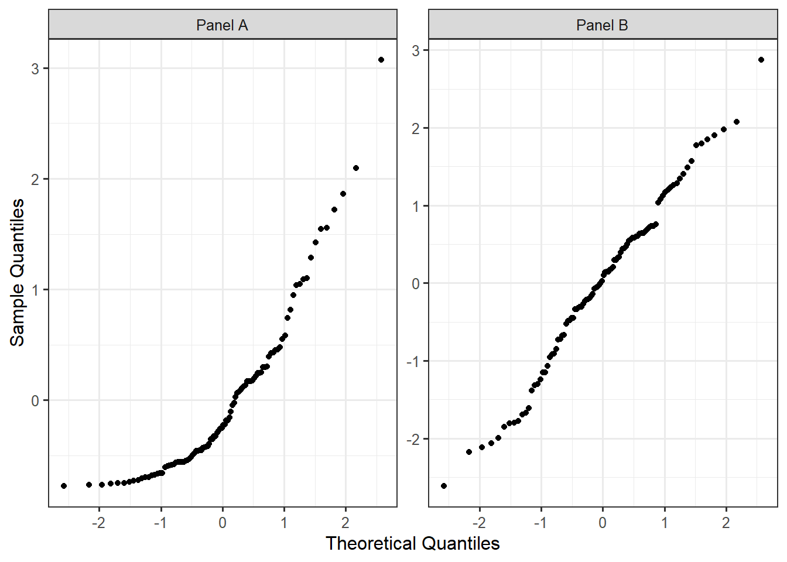

20 Assessing the Modeling Conditions
We have been considering the simple linear model described in Equation 17.3 for the data generating process of a quantitative response. For example, for the Seismic Activity Case Study, we considered a model that explained the bracketed duration at a location as a function of the magnitude of the earthquake:
\[(\text{Bracketed Duration})_i = \beta_0 + \beta_1(\text{Magnitude})_i + \varepsilon_i.\]
Estimates for the unknown parameters in this model were obtained using the method of least squares (Chapter 17). In order to obtain a model for the sampling distribution of these estimates (or the null distribution as appropriate), and thereby conduct inference, we added conditions to the distribution of the error term (Chapter 18). For example, under the “classical regression model” (Definition 18.3) we require the following four conditions:
- The error in the bracketed duration has an average of 0 regardless of the magnitude of the earthquake.
- The error in the bracketed duration for one location is independent of the error in the bracketed duration for any other location.
- The variability of the error in the bracketed duration is the same regardless of the magnitude of the earthquake.
- The errors in the bracketed duration follow a Normal distribution.
We also saw in Chapter 18, that we could develop an empirical model for the sampling distribution of the least squares estimates only enforcing the first two of these conditions on the distribution of the error. Which of these two models for the sampling distribution should be used? Unfortunately, we cannot simply state conditions and then proceed blindly. In order to rely on the p-values and confidence intervals produced from any modeling procedure, the data must be consistent with these conditions.
In this section, we discuss how we assess these conditions qualitatively.
20.1 Residuals
One of the complications we face is that we are imposing conditions on the error term, but we do not observe the error (since the parameters are unknown). However, we are able to determine the difference between each observation with respect to the estimated model for the data generating process. This difference between each observed response and what we would have predicted for this observation using the least squares estimates, called a residual, is analogous to the error term if the parameters were known. Therefore, residuals should behave like a sample of error terms.
Definition 20.1 (Residual) The difference between the observed response and the predicted response (estimated deterministic portion of the model). Specifically, the residual for the \(i\)-th observation is given by
\[(\text{Residual})_i = (\text{Response})_i - (\text{Predicted Mean Response})_i\]
where the “predicted mean response” is often called the predicted, or fitted, value.
Residuals mimic the noise in the data generating process.
For the simple linear regression model, the predicted mean response is computed by plugging into the formula
\[\widehat{\beta}_0 + \widehat{\beta}_1 (\text{Predictor})_{i},\]
where \(\widehat{\beta}_0\) and \(\widehat{\beta}_1\) are the least squares estimates. We can use the residuals to qualitatively assess if the observed data is consistent with each of the four potential conditions we might place on the distribution of the error term.
Big Idea
Residuals, since they mimic the noise in the data generating process, provide a way of assessing the modeling conditions placed on the distribution of the error term. The conditions are placed on the error term, but they are assessed with residuals.
20.2 Assessing the Mean-0 Condition
The error in the bracketed duration has an average of 0 regardless of the magnitude of the earthquake.
It is tempting to read this condition and believe that a rational way to assess this condition is to determine if the average of the residuals is 0. However, while the difference is subtle, the condition is not that the average error is 0; the condition is that the average error is 0 for all values of the predictor. It would seem we need to determine if, for each value of the predictor possible, if the residuals average to 0. This is infeasible numerically because we do not generally have multiple responses for each value of the predictor. We can, however, assess whether the data is consistent with this condition graphically. That is, in order to assess this condition, we need to graphically assess how the average behaves over a range of predictor values. We capture this by looking at the predicted (or fitted) values. Figure 20.1 shows the relationship between the residuals and the associated predicted values for the observations in the data set.
If the errors have a mean of 0 for all values of the predictor, then we would expect the residuals to have a mean of 0 for all predicted values. That is, if the data is consistent with the mean-0 condition, then as we move left to right across the plot, the residuals should tend to balance out at 0 everywhere along the x-axis. Imagine a “window” around the residuals (shown in the figure as vertical green rectangles), and imagine moving that window from left to right. If that window has to shift up or down to contain the cloud of residuals (so that the window is no longer centered around 0), that indicates a problem. Any trends in the location of this graphic would indicate the data is not consistent with the mean-0 condition.
Graphically Assessing the Mean-0 Condition
If the data is consistent with the mean-0 condition, there should be no trends in the location of the plot of the residuals against the predicted values.
As we examine Figure 20.1, the residuals do tend to balance out at 0 everywhere along the x-axis. That is, we do not see a trend in the location of the residuals as the predicted values increase. Therefore, it is reasonable to say the sample is consistent with the mean-0 condition.
20.3 Assessing the Independence Condition
The error in the bracketed duration for one location is independent of the error in the bracketed duration for any other location.
Generally, independence is assessed by considering the method in which the data was collected and considering the context with a discipline expert. By carefully considering the manner in which the data was collected, we can typically determine whether it is reasonable that the errors in the response are independent of one another. Some key things to consider when examining the data collection process:
- Are there repeated observations of the same variable made on the same subject? This often suggests some type of relationship between the observed responses and therefore would not be consistent with errors being independent (see Chapter 33 and Chapter 34).
- Is the response measured over time, such as daily temperature over the course of a month? Data collected over time often exhibits strong period-to-period relationships suggesting the errors are not independent. For example, if the temperature today is above average, it is more likely to be above average tomorrow as well.
- Is there a learning curve in how the data was collected? Learning curves again suggest some dependence from one observation to the next. For example, a new nurse may become better at collecting pulse readings with more practice over time.
- Measurement devices which are failing over time will introduce a dependence from one observation to the next. Imagine a bathroom scale that begins to add an additional pound each day. Then, being an above average weight one day will most likely lead to an above average weight the next, due primarily to the measurement device.
These last three points illustrate a particular deviation from our condition of independence in which two observations collected close together in time are related. When we know the order in which the data was collected, we can assess whether the data tends to deviate from the condition of independence in this manner. This is done graphically through a time-series plot of the residuals. If two errors were unrelated, then the value of one residual should tell us nothing about the value of the next residual. Therefore, a plot of the residuals over time should look like noise (since residuals are supposed to mimic the noise in the model). If there are any trends, then it suggests the data is not consistent with independence.
Definition 20.2 (Time-Series Plot) A time-series plot of a variable is a line plot with the variable on the y-axis and time on the x-axis.
Graphically Assessing the Independence Condition
If the data is consistent with the independence condition, we would not expect to see a trend in the location or spread in a time-series plot of the residuals. Note that this graphic can only be used if the order in which the data was collected is known, and the order indicates some natural timing.
Figure 20.2 shows two hypothetical datasets. In Panel A, the residuals display a trend in the location over time. Knowing that a response was below average suggests the next response will also be below average. In Panel B, the results display a trend in the spread over time. This suggests that measurements taken later in the study were less precise. Both panels are examples of patterns which would suggest the data is not consistent with the condition of independence.

Instead, if the data were consistent with the condition of independence on the error terms, we would expect to see a plot similar to Figure 20.3. Notice there are no trends in the location or spread of the residuals.

For the Seismic Activity Case Study, the data was actually collected over time as earthquakes occurred. More, as technology has changed over time, it is reasonable to fear that the errors in our observations are related over time. In order to assess this, consider the time-series plot of the residuals from our model for the data generating process in which the bracketed duration is modeled as a linear function of the magnitude of the earthquake (Figure 20.4). Based on the figure, there are no clear trends in either the location or spread of the residuals over time (the figure resembles noise with no patterns). As a result, it is reasonable to assume the data is consistent with the errors being independent of one another.

The condition of independence is another reason we consider randomization when collecting data. Both random sampling and random assignment reduces the likelihood of the errors in two observations being related.
20.4 Assessing Homoskedasticity
The variability of the error in the bracketed duration is the same regardless of the magnitude of the earthquake.
When assessing the “mean-0 condition” above, we saw that the key phrase was “for all values of the predictor.” Similarly, homoskedasticity suggests the variability in the errors is consistent for all values of the predictor. Therefore, we rely on the same graphical assessment — a plot of the residuals against the predicted values. However, instead of focusing on a trend in the location of the residuals, we are focused on a trend in the spread.
Graphically Assessing the Constant Variance Condition
If the data is consistent with the constant variance condition, there should be no trends in the spread of the plot of the residuals against the predicted values.
Again, imagine a window (illustrated as vertical green rectangles in Figure 20.1) around the residuals. As we move left to right, if the size of the window has to change in order to keep the residuals inside (the window stretches or compresses vertically), then that is an indication that the spread of the residuals is changing. For our example, there is a clear “fan shape” to the residuals as we move left to right suggesting the precision of the model decreases when making larger predictions. This goes back to something we observed in Chapter 16 when examining a plot of the response and predictor (see Figure 16.1). We observed that for large earthquakes (high magnitudes), the bracketed duration was much more variable than for smaller earthquakes. So, our model is not as precise for some values of the predictor. This is evidence that our data is not consistent with the condition that the errors have the same variability for all values of the predictor.
This partially explains the differences in the confidence intervals reported in Table 18.1 and Table 18.2. Since there is clear evidence that the data is not consistent with the constant variance condition, then it is not safe to assume the classical regression model. That is, the confidence intervals and p-values, as well as the underlying models for the sampling distribution and null distribution that generated them, constructed assuming the data is consistent with all four conditions, are suspect. We should instead rely on an empirical model for the sampling distribution of the least squares estimates when constructing confidence intervals or an empirical model for the null distribution of the standardized statistic if computing a p-value.
20.5 Assessing Normality
The errors in the bracketed duration follow a Normal distribution.
Assessing whether observations adhere to a particular distribution is a large area in statistical research. Many methods have been developed for this purpose. We emphasize a single graphical summary known as a probability plot. The construction of the plot is beyond the scope of this text, but the concepts underlying its construction actually tie in nicely to the big themes we have been discussing. Recall that if a sample is representative, then it should be a snapshot of the underlying population. Therefore, if we believe the underlying population has some particular distribution, we would expect the properties of this distribution to be apparent in the sample as well.
If we believe the errors follow a Normal distribution, then it is reasonable that the residuals should maintain some of those properties. For example, the 10-th percentile of the residuals should roughly equate to the 10-th percentile expected from a Normal distribution. Mapping the percentiles that we observe to those that we expect is the essence of a probability plot.
Definition 20.3 (Probability Plot) Also called a “Quantile-Quantile Plot”, a probability plot is a graphic for comparing the distribution of an observed sample with a theoretical probability model for the distribution of the underlying population. The quantiles observed in the sample are plotted against those expected under the theoretical model.
While a probability plot can be constructed for a host of probability distributions, the most common is the Normal probability plot. The plot compares the observed residuals with those we would expect if the residuals were sampled from a Normal distribution. If the residuals closely aligned with our expectations from a Normal distribution, then we would expect to see a straight line if these are plotted against one another. Trends away from a straight line suggest the proposed Normal distribution is not a reasonable model for the distribution of the errors.
Graphically Assessing the Normality Condition
If the data is consistent with the normality condition, the Normal probability plot of the residuals should exhibit a straight line with any deviations appearing to be random. Systemic deviations from a straight line indicate the observed distribution does not align with the proposed model.
Figure 20.5 shows the Normal probability plot of the residuals from our model for the data generating process of the bracketed duration.

We note there is some systematic departure from a straight line in the graphic. In particular, on the left-hand side of the graphic, from -3 to -1.5 along the x-axis, the points tend to curve upward before changing direction at -1.5 on the x-axis. While we want to avoid over-interpreting small deviations from the linear trend, we should pay attention to clear departures.
We note that of the conditions considered, Normality is probably the least important as the analytic models for the sampling distributions of the least squares estimates are generally fairly robust to this condition. This is especially true in large samples (see Appendix A). However, we can always relax this condition by building an empirical model for the sampling distributions of the least squares estimates. Given the curvature we observed in this graphic, we would consider an empirical model, especially given we have already established the data is not consistent with the condition of homoskedasticity.
For comparison, Figure 20.6 illustrates a hypothetical dataset for which the residuals suggest the Normality condition of the errors is unreasonable as well as an example of when the residuals are consistent with the Normality condition on the errors.

20.6 General Tips for Assessing Assumptions
Each of the methods presented here are qualitative assessments, which means they are subjective. That is okay. As the analyst, in consultation with the discipline expert, it is up to us to determine which conditions we are willing to assume are reasonable to impose. That is, with which conditions do we believe the data are consistent? Here are four overall things to keep in mind.
First, do not spend an extraordinary amount of time examining any one residual plot. If we stare at a plot too long, we can convince ourselves there is a pattern in anything. We are looking for glaring evidence that the data is not consistent with the conditions we have imposed on our model. This is especially true when we have only a few observations. In these settings, reading plots can be very difficult. Again, it is about what we are comfortable assuming.
Second, we have chosen the language carefully throughout this chapter. We have never once stated that a condition “was satisfied.” When we perform an analysis, we are making an assumption that the conditions are satisfied. We can never prove that they are; we can only show that the data is consistent with a particular set of conditions. We can, however, provide evidence that a condition is violated. When that is the case, we should be wary of trusting the resulting p-values and confidence intervals which are constructed from imposing that condition. This is not unlike hypothesis testing; just as we can never prove the null hypothesis is true, we cannot prove that a condition is satisfied. The graphics are constructed using residuals, but what we are looking for comes from how we expect the residuals to behave if a particular condition is true. Just because residuals behave a certain way, however, does not guarantee a condition is or is not met. Just like hypothesis testing, we are looking for what we are able to discern given the data.
Big Idea
We cannot prove a condition is satisfied; we can only hope to show the data is consistent with the condition and it is therefore reasonable to assume it is satisfied.
Third, any conditions required for a particular analysis should be assessed. If our sample is not consistent with the necessary conditions, we should choose a different analysis. The inference we obtain from an analysis is only reliable if the data is consistent with any necessary conditions.
Finally, transparency is crucial. Perhaps more important than which conditions we choose to impose is clearly communicating to our audience our decisions. If our analysis is to be replicated or critiqued fairly (and any good scientist or engineer should welcome such critique), we need to be transparent about the decisions we make along the way, including the assumptions we make on the model for the data generating process.